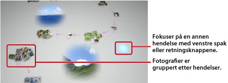

Vise fotoer
Når du starter Photo Gallery, analyseres og grupperes alle fotoer som er lagret i systemminnet på PS3™-systemet automatisk etter hendelser. Fotoer grupperes inn i hendelser basert på fotoenes dato og tid.
Velge hendelser
Bruk venstre spak eller retningsknapper til å velge mellom fotografier eller hendelser. Du kan velge flere fotografier eller hendelser ved å trykke på  -knappen med hvert valg.
-knappen med hvert valg.

Endre måten fotografier vises på
For å endre måten fotografiene vises på, velger du grupper eller hendelser og trykker på  -knappen. Visningen endres som vist i etterfølgende bilder. For å gå tilbake til en tidligere visning trykker du på
-knappen. Visningen endres som vist i etterfølgende bilder. For å gå tilbake til en tidligere visning trykker du på  -knappen.
-knappen.
Tips
Når et fotografi vises i fullskjermmodus, kan du åpne kontrollpanelet som brukes under  (Foto)-kategorien i XMB™-skjermen, ved å trykke på
(Foto)-kategorien i XMB™-skjermen, ved å trykke på  -knappen. Du kan deretter bruke alternativene i kontrollpanelet på fotografiene som vises.
-knappen. Du kan deretter bruke alternativene i kontrollpanelet på fotografiene som vises.
Vise fotografier i en lysbildefremvisning
For å spille av en lysbildefremvisning av bildene dine, velger du en spilleliste eller en hendelse fra [Biblioteksområde]. Deretter trykker du på -knappen og velger  (Slideshow). Fra skjermen som vises stiller du inn alternativene for lysbildefremvisningen som beskrevet under, og velger [Start].
(Slideshow). Fra skjermen som vises stiller du inn alternativene for lysbildefremvisningen som beskrevet under, og velger [Start].
| Lysbildefremvisnings stil | Velg hvordan du vil at fotografiene skal vises i lysbildefremvisningen. |
|---|---|
| Lysbildefremvisnings hastighet | Velg lysbildefremvisningens hastighet. |
| Sorter | Velg rekkefølgen på fotografiene. |
| Musikk til lysbildefremvisning | Velg musikken som skal spilles av i bakgrunnen under lysbildefremvisningen fra musikkinnholdet som følger med Photo Gallery-programmet. |
 |
Velg musikken som skal spilles av i bakgrunnen under lysbildefremvisningen fra  (Musikk)-kategorien i XMB™-skjermen. (Musikk)-kategorien i XMB™-skjermen. |
Tips
- Under en lysbildefremvisning har du tilgang til kontrollpanelet for (Foto)-kategorien ved at du trykker på -knappen. Du kan deretter bruke alternativene i kontrollpanelet på lysbildefremvisningen som vises.
- Når bilder vises i [Biblioteksområde] kan du velge [Likhet] under [Sorter] for å hente bilder etter bildenes likhet.
Endre bakgrunnsmusikken
Du kan endre musikken som spilles av i bakgrunnen når du viser fotografiene dine. Trykk på PS-knappen på den trådløs håndkontroll for å vise XMB™-skjermen, gå til (Musikk) og velg musikkfilen som du vil spille av.
Tips
- For å endre bakgrunnsmusikken for en lysbildefremvisningen, må du velge musikken som du vil spille av før du starter lysbildefremvisningen.
- Hvis du, mens du bruker Photo Gallery, velger et musikkspor fra et lagringsmedium som bakgrunnsmusikk og deretter starter en lysbildefremvisning, kan det hende sporet ikke kan spilles av på nytt når lysbildefremvisningen er ferdig.